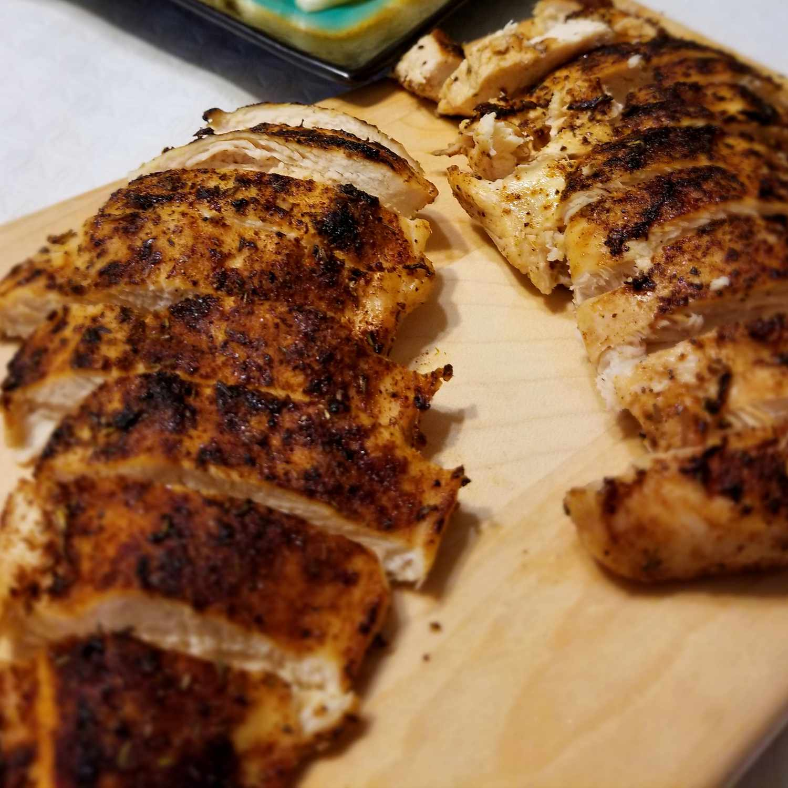

Blackened Chicken

About Blackened Chicken
Blackened chicken is quick and easy to make at home. Adjust the spices in this recipie to suit your taste. This is great on a summer's day with fresh corn and mashed potatoes
Ingredients
- 1/2 teaspoon paprika
- 1/4 teaspoon cayenne pepper
- 1/4 teaspoon ground cumin
- 1/4 dried thyme
- 1/8 teaspoon onion powder
- 1/8 teaspoon ground white pepper
- 1/8 teaspoon salt
- 2 skinless, boneless chicken breast halves
- cooking spray
Directions
- Preheat the oven to 350 degrees F (175 degress C). Spray a baking sheet with cooking spray
- Heat a cast iron skillet over high heat until it's smoking hot, about 3 to 5 minutes.
- While the skillet is heating, mix paprika, cayenne, cumin, thyme, onion powder, white pepper, and salt together in a small bowl. Spray chicken breasts on both sides with cooking spray, then coat evenly with spice mixture.
- Place chicken in the hot pan and cook for 1 minute. Turn and cook 1 minute on other side. Transfer chicken to the prepared baking sheet.
- Bake in the preheated oven until chicken is no longer pink in the center and the juices run clear, about 5 to 10 minutes.